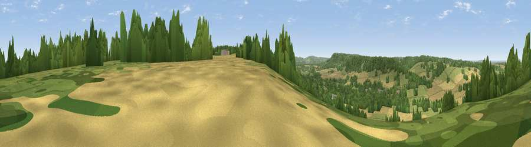

Viewpoint near Shoreham
#25909 in England · top 26% of its area beats it · near ShorehamThe view, rendered

A 360° render of this exact spot computed from the terrain model, tree cover and land cover — summer colours, afternoon light, calibrated against photographs of famous viewpoints. Real trees, hedges and buildings will differ in detail.
The panorama
Grey silhouette: terrain skyline in each direction (720 bearings, Earth curvature and refraction included). Dashed green: skyline with trees (+15 m) and buildings (+8 m) as obstacles. Blue strip: how far the ground is visible on each bearing.
Where the view opens
Wedge length = distance to the farthest visible ground on that bearing (vegetation-aware). Rings at 10, 25 and 50 km.
What fills the view
38% woodland · 31% cropland · 29% grassland · 2% built-up
Angular shares of the visible panorama (visual magnitude), not map area. Landscape diversity 0.51 (0–1 Shannon).
Key numbers
More beautiful places nearby
The staircase of upgrades: each row has a higher view potential than everything closer. Driving times are estimates from straight-line distance, calibrated against real road routing — check an actual route before setting out.
| Place | Direction | Drive | Score |
|---|---|---|---|
| Viewpoint near Shoreham | S · 1 km | ~3 min | 48.6 |
| Viewpoint near Well Hill | WNW · 4 km | ~9 min | 54.4 |
| Viewpoint near Wrotham | ESE · 7 km | ~14 min | 65.1 |
| Viewpoint near Wrotham | ESE · 9 km | ~17 min | 66.6 |
| Viewpoint near Shipbourne | SSE · 10 km | ~19 min | 69.1 |
| Box Hill | WSW · 34 km | ~52 min | 70.4 |
| Viewpoint near Box Hill Village | WSW · 35 km | ~53 min | 71.0 |
| Viewpoint near Coldharbour | WSW · 43 km | ~63 min | 71.3 |
51.33761, 0.19615 · source: screening · position refined by local search. Computed location — check access rights before visiting.